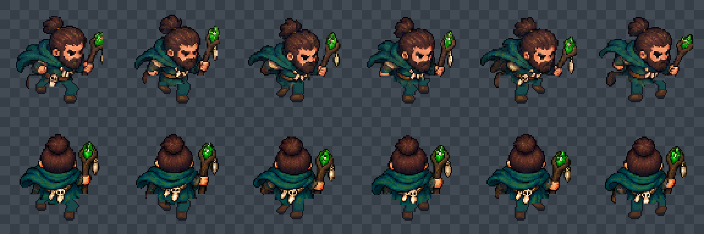

12 FPS, native 192px cells; frames 1–6 left to right. Row 1 front, row 2 rear. Fixed anchor [96,132].
Contact R · support R · left passing · contact L · support L · right passing → contact R


Persistent limb colours in the authored pixel source: turquoise trousers, brown leather, dark soles. Rear follows the same leg identities.